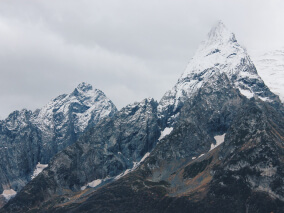
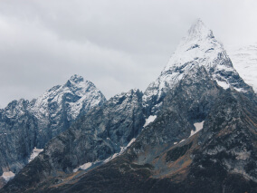

По опросам ВЦИОМ, 95% россиян мечтают куда-нибудь поехать, но только 36% планируют провести отпуск
в родной стране. Мол, чего мы тут, дома, не видели? На самом деле, Россия — это
целая
вселенная с ласковым морем юга, густыми лесами Саян и суровыми льдами плато Путорана. А ещё увидеть
все
эти красоты можно без миллионов на счету, загранпаспорта и многочасовых перелетов. Как, например, Вера
Башмакова — смелая молодая мама, которая взяла в охапку троих детей, усадила их в свою
«Ладу» и проехала 20 тысяч километров по родной стране. Мы выбрали и описали
некоторые интересные места, достойные вашего отпуска.
Здесь, посреди лесов и песчаных дюн, вы сможете увидеть два водных горизонта — спокойного
Куршского
залива с одной стороны и подёрнутого рябью волн Балтийского моря с другой. Уникальная природная
зона
на краю российского анклава.
На этом Калининградская область не заканчивается. Для путешественника и исследователя
там же по соседству — самая западная точка России, Балтийская коса, —
и немецкое
наследие
россыпи небольших приморских городов. Атмосфера здешних мест исключает суету, окуная в спокойствие
природы
и запах стального, прохладного моря.
Почти весь полуостров находится за Полярным кругом. Саамская тундра, от которой
на юг — тайга, а на север — Ледовитый океан, прикидывающийся
Баренцевым морем.
Возможно, вы смотрели Звягинцева и даже слышали историю арктического фестиваля в Териберке.
Возможно,
слово «Хибины» не осталось под снегом школьных воспоминаний об уроках географии.
Возможно,
вы не интересовались пронизывающей земную кору сверхглубокой скважиной, а от апатитов вас
давно
накрывает апатия. Но ваша мечта увидеть северное сияние начинает сбываться с билетом
в Мурманск.
Алтай — одно из красивейших мест в России. В первую очередь из-за гор: если ехать
вдоль
хребта, вы увидите склоны, усыпанные соснами, горные реки и озёра. А если вы откроете
в автомобиле окна, сможете познакомиться с невидимым чудом здешних мест — горным
воздухом.
Климат на Алтае умеренный, поэтому ехать сюда лучше всего летом. Так вы увидите всё разнообразие
местной флоры
и фауны. По лесам Алтая бродят лоси, над хребтами летают орлы, а на равнинах пасутся
косули.
И знаменитые манулы — тоже обитатели Алтайского края.
Всем известен Байкал как крупнейшее озеро
в мире. Многие также знают, что это самый большой источник пресной воды и одно
из красивейших
мест
в России.
Конечно, это всё так. Но Байкал ещё идеальное место для соревнований по скийорингу. Это такой вид
спорта,
когда лыжник привязывает себя
к мотоциклу, и тандем старается развить как можно бóльшую скорость на льду. В марте
2019 года
на фестивале «Байкальская миля» был поставлен мировой рекорд — 197.011 км/ч.
Сибирь заканчивается не на Урале, а в Карелии: образующая тайгу сибирская лиственница
не растёт
западнее Водлозера. Зато здесь она вымахивает на 30 метров — леса карельских национальных
парков
из-за непроходимых болот никогда не знали топора. Некоторым соснам уже больше чем полтысячелетия.
Прикоснитесь
к живому существу, видевшему солнце раньше, чем увидал его Иван Грозный.
В девственном лесу на сотню километров не встретишь тропы. А на редких тропинках
деревья
в паре метров от земли помечены медвежьими когтями. Чтобы все знали, кто тут хозяин.


 
